第 100–91 名
Transaction de Novo
Bedhead
第 100 名 · 1998
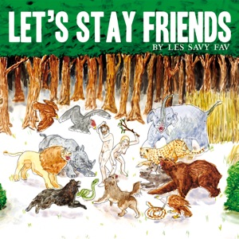
Let’s Stay Friends
Les Savy Fav
第 99 名 · 2007
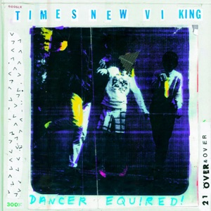
Dancer Equired
Times New Viking
第 98 名 · 2011
Clean
Soccer Mommy
第 97 名 · 2018

Z
My Morning Jacket
第 96 名 · 2005
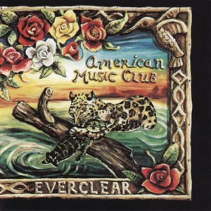
Everclear
American Music Club
第 95 名 · 1991
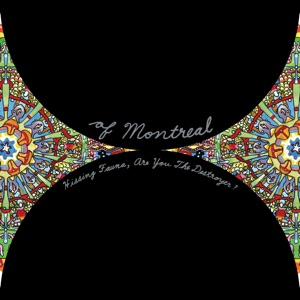
Hissing Fauna, Are You the Destroyer?
Of Montreal
第 94 名 · 2007
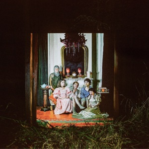
Rat Saw God
Wednesday
第 93 名 · 2023
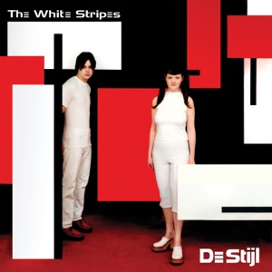
De Stijl
The White Stripes
第 92 名 · 2000
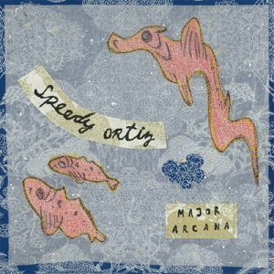
Major Arcana
Speedy Ortiz
第 91 名 · 2013
第 90–81 名
My Woman
Angel Olsen
第 90 名 · 2016
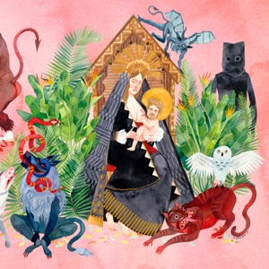
I Love You, Honeybear
Father John Misty
第 89 名 · 2015

Drum’s Not Dead
Liars
第 88 名 · 2006
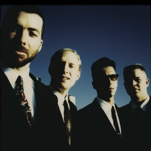
Libertine
Silkworm
第 87 名 · 1994
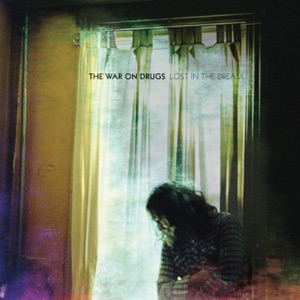
Lost in the Dream
The War on Drugs
第 86 名 · 2014
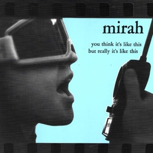
You Think It’s Like This but Really It’s Like This
Mirah
第 85 名 · 2000
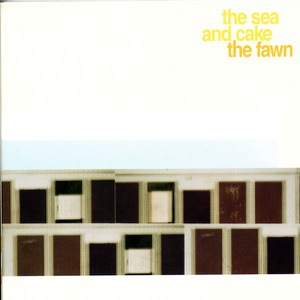
The Fawn
The Sea and Cake
第 84 名 · 1997
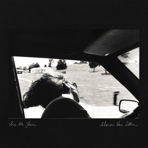
Are We There
Sharon Van Etten
第 83 名 · 2014
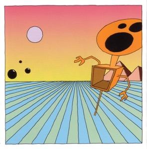
Emergency & I
The Dismemberment Plan
第 82 名 · 1999
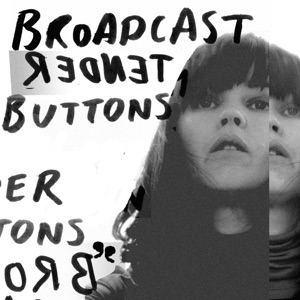
Tender Buttons
Broadcast
第 81 名 · 2005
第 80–71 名
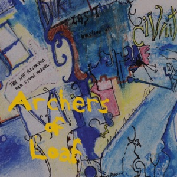
Icky Mettle
Archers of Loaf
第 80 名 · 1993
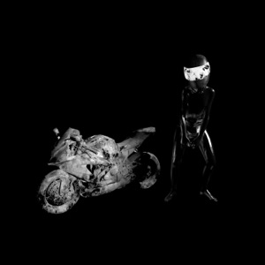
Boat Songs
MJ Lenderman
第 79 名 · 2022
Salad Days
Mac DeMarco
第 78 名 · 2014
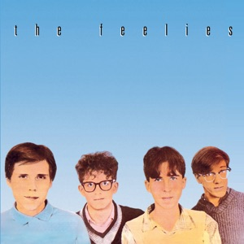
Crazy Rhythms
The Feelies
第 77 名 · 1980
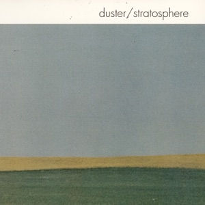
Stratosphere
Duster
第 76 名 · 1998
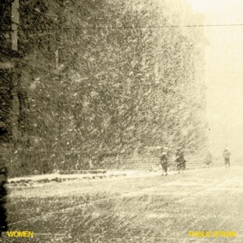
Public Strain
Women
第 75 名 · 2010
Strange Mercy
St. Vincent
第 74 名 · 2011
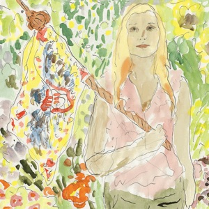
This Is It and I Am It and You Are It and So Is That and He Is It and She Is It and It Is It and That Is That
Marnie Stern
第 73 名 · 2008
The Monitor
Titus Andronicus
第 72 名 · 2010
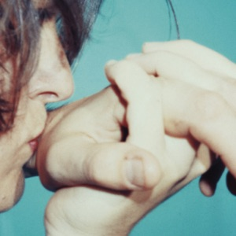
Manos
The Spinanes
第 71 名 · 1993
第 70–61 名
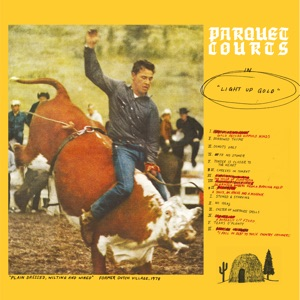
Light Up Gold
Parquet Courts
第 70 名 · 2012
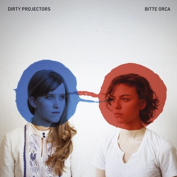
Bitte Orca
Dirty Projectors
第 69 名 · 2009

Nouns
No Age
第 68 名 · 2008
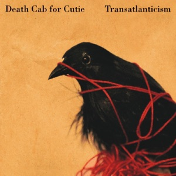
Transatlanticism
Death Cab for Cutie
第 67 名 · 2003
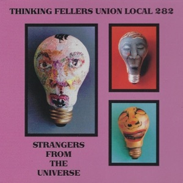
Strangers From the Universe
Thinking Fellers Union Local 282
第 66 名 · 1994

Fleet Foxes
Fleet Foxes
第 65 名 · 2008
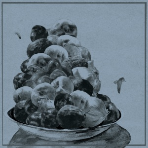
Painted Shut
Hop Along
第 64 名 · 2015
Whatever People Say I Am, That’s What I’m Not
Arctic Monkeys
第 63 名 · 2006

Insignificance
Jim O’Rourke
第 62 名 · 2001
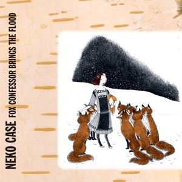
Fox Confessor Brings the Flood
Neko Case
第 61 名 · 2006
第 60–51 名

Apple O’
Deerhoof
第 60 名 · 2003
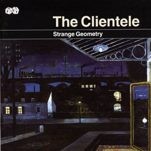
Strange Geometry
The Clientele
第 59 名 · 2005
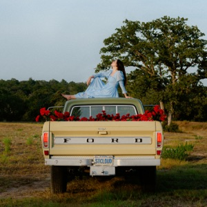
Saint Cloud
Waxahatchee
第 58 名 · 2020
Wakin on a Pretty Daze
Kurt Vile
第 57 名 · 2013

Veckatimest
Grizzly Bear
第 56 名 · 2009
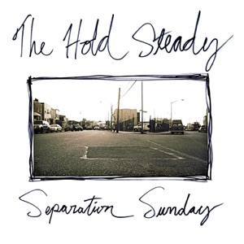
Separation Sunday
The Hold Steady
第 55 名 · 2005
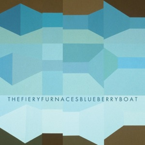
Blueberry Boat
The Fiery Furnaces
第 54 名 · 2004
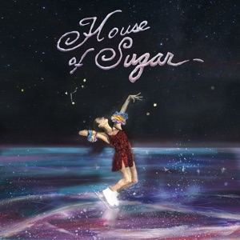
House of Sugar
Alex G
第 53 名 · 2019
Yeah Yeah Yeahs EP
Yeah Yeah Yeahs
第 52 名 · 2001

The Meadowlands
The Wrens
第 51 名 · 2003
第 50–41 名
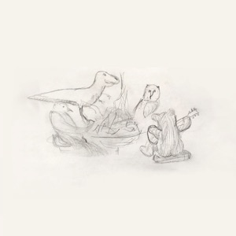
Dragon New Warm Mountain I Believe in You
Big Thief
第 50 名 · 2022
The Stone Roses
The Stone Roses
第 49 名 · 1989
The Execution of All Things
Rilo Kiley
第 48 名 · 2002

Kill the Moonlight
Spoon
第 47 名 · 2002
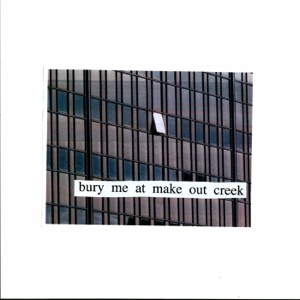
Bury Me at Makeout Creek
Mitski
第 46 名 · 2014
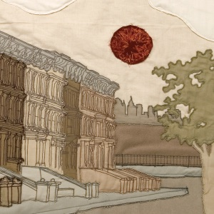
I’m Wide Awake, It’s Morning
Bright Eyes
第 45 名 · 2005
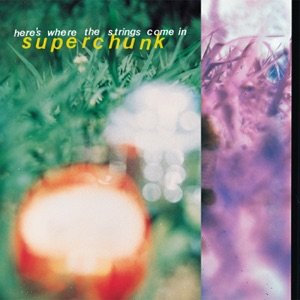
Here’s Where the Strings Come In
Superchunk
第 44 名 · 1995
Broken Girl
Julie Doiron
第 43 名 · 1996
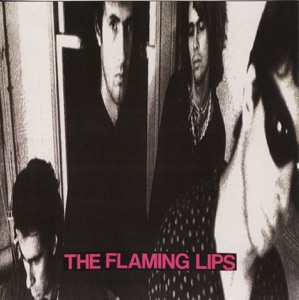
In a Priest Driven Ambulance
Flaming Lips
第 42 名 · 1990
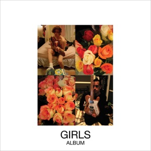
Album
Girls
第 41 名 · 2009
第 40–31 名

Chutes Too Narrow
The Shins
第 40 名 · 2003
Boxer
The National
第 39 名 · 2007

Strawberry Jam
Animal Collective
第 38 名 · 2007
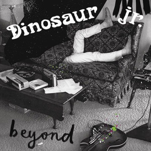
Beyond
Dinosaur Jr.
第 37 名 · 2007
If You’re Feeling Sinister
Belle and Sebastian
第 36 名 · 1996
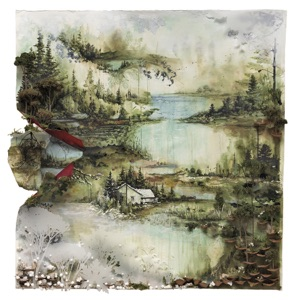
Bon Iver, Bon Iver
Bon Iver
第 35 名 · 2011

Bows + Arrows
The Walkmen
第 34 名 · 2004
Jamboree
Beat Happening
第 33 名 · 1988
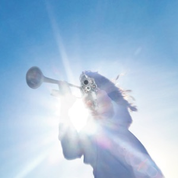
Getting Killed
Geese
第 32 名 · 2025
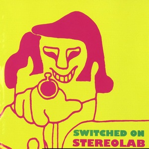
Switched On
Stereolab
第 31 名 · 1992
第 30–21 名
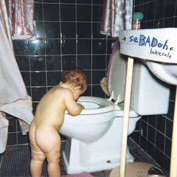
Bakesale
Sebadoh
第 30 名 · 1994

Modern Vampires of the City
Vampire Weekend
第 29 名 · 2013
Knock Knock
Smog
第 28 名 · 1999
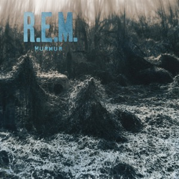
Murmur
R.E.M.
第 27 名 · 1983
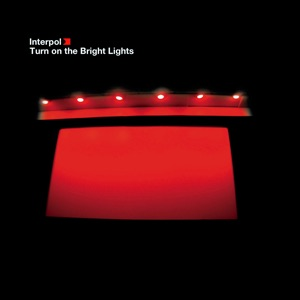
Turn on the Bright Lights
Interpol
第 26 名 · 2002
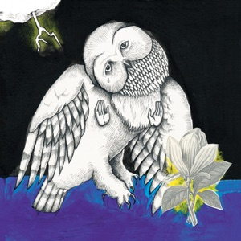
The Magnolia Electric Co.
Songs: Ohia
第 25 名 · 2003
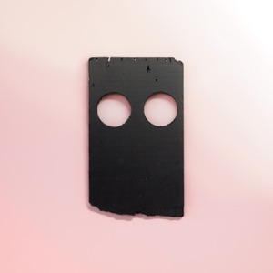
Double Negative
Low
第 24 名 · 2018
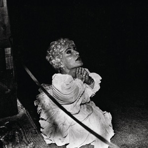
Halcyon Digest
Deerhunter
第 23 名 · 2010
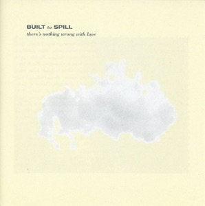
There’s Nothing Wrong With Love
Built to Spill
第 22 名 · 1994

Any Other City
Life Without Buildings
第 21 名 · 2001
第 20–11 名

Desperate Youth, Blood Thirsty Babes
TV on the Radio
第 20 名 · 2004
Funeral
Arcade Fire
第 19 名 · 2004

Illinois
Sufjan Stevens
第 18 名 · 2005
The Glow, Pt. 2
The Microphones
第 17 名 · 2001

Double Nickels on the Dime
Minutemen
第 16 名 · 1984

Yankee Hotel Foxtrot
Wilco
第 15 名 · 2001
Bee Thousand
Guided by Voices
第 14 名 · 1994
Moon Pix
Cat Power
第 13 名 · 1998
The Lonesome Crowded West
Modest Mouse
第 12 名 · 1997
You Forgot It in People
Broken Social Scene
第 11 名 · 2002
第 10–1 名
Diamond Jubilee
Cindy Lee
第 10 名 · 2024
Dig Me Out
Sleater-Kinney
第 9 名 · 1997
Painful
Yo La Tengo
第 8 名 · 1993
Kaputt
Destroyer
第 7 名 · 2011
American Water
Silver Jews
第 6 名 · 1998
In the Aeroplane Over the Sea
Neutral Milk Hotel
第 5 名 · 1998

Either/Or
Elliott Smith
第 4 名 · 1997

Daydream Nation
Sonic Youth
第 3 名 · 1988

Exile in Guyville
Liz Phair
第 2 名 · 1993
Crooked Rain, Crooked Rain
Pavement
第 1 名 · 1994
找不到符合的作品，換個關鍵字試試。